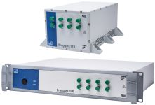
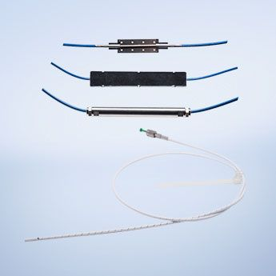
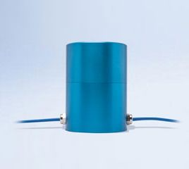

Company profile:
HBM FiberSensing, S.A.

HBM FiberSensing, S.A.
Rua Vasconcelos Costa, 277
4470–640 Maia
Portugal
| Tel.: | +351 229 61 3010 |
| Fax: | +351 229 61 3020 |
| E-mail: | |
| Website: | www.hbm.com/fs |
| Social media: | LinkedIn, YouTube |
Company Description
HBM FiberSensing is a European company specialized in the development and production of advanced monitoring systems based on optical Fiber Bragg Grating (FBG) technology. The company concentrates all optical business of the HBM Group and is certified in accordance with ISO 9001:2008 standards.
Specially requested for test and measurement applications in markets such as energy, civil and geotechnical engineering, aerospace, industry and research, HBM FiberSensing optical solutions find use in a wider array of applications where long-term, self-referenced and reliable measurements are required.
The company provides optical sensors, interrogators, software and components together with complete monitoring solutions, primarily on an OEM basis. Moreover, it has the ability to build customized monitoring solutions according to customers’ specific requirements.
HBM FiberSensing's full product portfolio is developed in-house from conception to manufacturing, using proprietary technology, and is available through HBM global market presence in over 80 countries.
Founded in Germany in 1950, Hottinger Baldwin Messtechnik (HBM) is today the technology and market leader in the field of test and measurement. HBM’s product range comprises solutions for the entire measurement chain, from virtual to physical testing. The company has production facilities in Germany, USA, Portugal and China.
Products
| Product | Description |
|---|---|
| optical metrology (… equipment) |  An improved version of the high-resolution FS22 Industrial BraggMETER DI interrogator for dynamic acquisition rates is now available with the following features: - real sampling rates of operation from 50, 100, 200, and 500 to 1000 S/s - better time synchronization with the integration of the NTP protocol in the interrogator internal processing unit - increased operating temperature ranges from [10 °C to 40 °C] to [0 °C to 50 °C] Fully developed and manufactured in-house using proprietary technology and certified components, the FS22 DI interrogator is now one of the very few interrogators in the market covering at least 100 nm wavelength range and acquisition rates of 1000 S/s. For more information about our best seller acquisition system, click here. |
| strain sensors |  Our FS62 optical strain sensors are designed to be bonded to surfaces and materials, spot welded to structures and components, attached or directly cast into concrete wet mix. Their small size and weight makes them the ideal choice for hard-to-reach locations and measuring points. They are particularly suited for structural health monitoring in large structures (SHM), these sensors perfectly match the requirements of strain measurement in several indoor or outdoor applications. |
| temperature sensors |  Our FS63 optical temperature sensors are suited for temperature measurements in large structures, such as Structural Health Monitoring (SHM) in civil structures and thermal mapping in electrical machines. Their small size and weight makes them the ideal choice for hard-to-reach locations and measuring points. Designed to be bonded to surfaces and materials, spot welded to structures and components, attached or directly cast into concrete wet mix, FS63 temperature sensors can also be used for thermal compensation of other optical sensors. |
| vibration sensors |  Our FS65 optical accelerometer is designed to be used in a large range of monitoring applications, where low frequency and small amplitude vibrations are present. Simultaneous measurement of vibration along different axes is possible using multiple accelerometers. |
| Bragg gratings | |
| fiber Bragg gratings | |
| fiber optics | |
| fiber-optic sensors (… and related equipment) | |
| fibers (optical …) | |
| optical filters | |
| optical sensing instruments | |
| optical sensors | |
| tunable optical filters |
Information of HBM FiberSensing Appears on the Following Pages
Company profile (this page)
Pages with Suppliers for Products
Bragg gratings, fiber Bragg gratings, fiber optics, fiber-optic sensors, fibers, optical filters, optical metrology, optical sensing instruments, optical sensors, strain sensors, temperature sensors, tunable optical filters, vibration sensors
Encyclopedia Articles
Profiles of Other Suppliers
HBM FiberSensing is shown as alternative supplier on 23 pages of other suppliers not having an ad package.
Other Pages
On various pages, a banner can randomly show up which displays a random selection of logos of suppliers with an ad package.